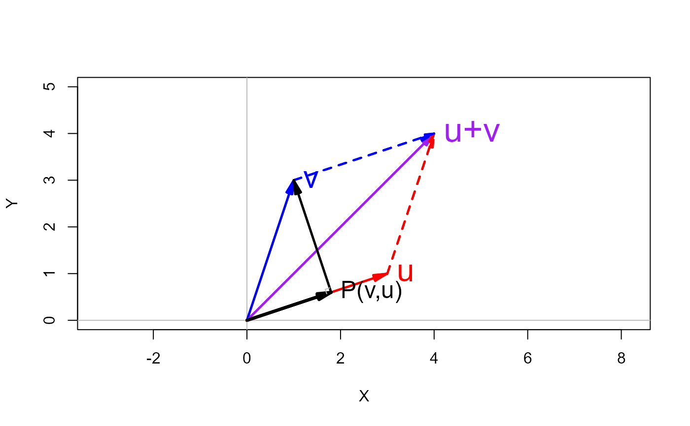

This function draws vectors in a 2D plot, in a way that facilitates constructing vector diagrams. It allows vectors to be specified as rows of a matrix, and can draw labels on the vectors.
Usage
vectors(
X,
origin = c(0, 0),
lwd = 2,
angle = 13,
length = 0.15,
labels = TRUE,
cex.lab = 1.5,
pos.lab = 4,
frac.lab = 1,
...
)Arguments
- X
a vector or two-column matrix representing a set of geometric vectors; if a matrix, one vector is drawn for each row
- origin
the origin from which they are drawn, a vector of length 2.
- lwd
line width(s) for the vectors, a constant or vector of length equal to the number of rows of
X.- angle
the
angleargument passed toarrowsdetermining the angle of arrow heads.- length
the
lengthargument passed toarrowsdetermining the length of arrow heads.- labels
a logical or a character vector of labels for the vectors. If
TRUEandXis a matrix, labels are taken fromrownames(X). IfNULL, no labels are drawn.- cex.lab
character expansion applied to vector labels. May be a number or numeric vector corresponding to the the rows of
X, recycled as necessary.- pos.lab
label position relative to the label point as in
text, recycled as necessary.- frac.lab
location of label point, as a fraction of the distance between
originandX, recycled as necessary. Valuesfrac.lab > 1locate the label beyond the end of the vector.- ...
other arguments passed on to graphics functions.
Examples
# shows addition of vectors
u <- c(3,1)
v <- c(1,3)
sum <- u+v
xlim <- c(0,5)
ylim <- c(0,5)
# proper geometry requires asp=1
plot( xlim, ylim, type="n", xlab="X", ylab="Y", asp=1)
abline(v=0, h=0, col="gray")
vectors(rbind(u,v,`u+v`=sum), col=c("red", "blue", "purple"), cex.lab=c(2, 2, 2.2))
# show the opposing sides of the parallelogram
vectors(sum, origin=u, col="red", lty=2)
vectors(sum, origin=v, col="blue", lty=2)
# projection of vectors
vectors(Proj(v,u), labels="P(v,u)", lwd=3)
vectors(v, origin=Proj(v,u))
corner(c(0,0), Proj(v,u), v, col="grey")
